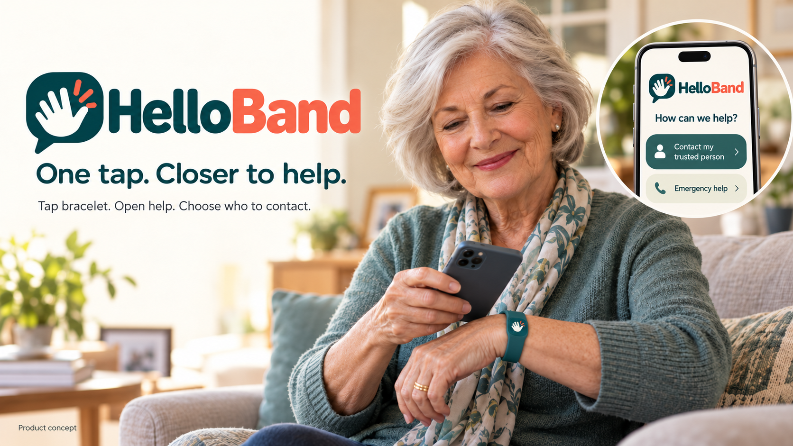
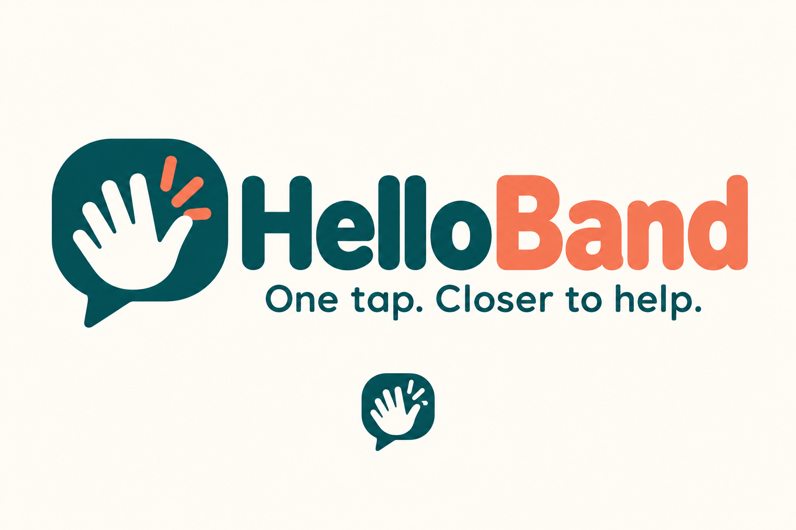

Knowledge
Unify and make
information usable.
AI and workflow systems for enterprise,
government and non-profit organisations.
Unify and make
information usable.
Automate and
streamline work.
Turn data into
decisions.
Built around your people, information and processes.
Find, summarise and apply information across your organisation.
Automate routine work and connect your processes end to end.
Turn complex data into clear, actionable insights for better decisions.
Bring your systems together securely and make them work as one.
Practical AI and systems to improve productivity, reduce risk and support growth.
Systems designed around your service delivery, access and operational requirements.
Help care teams prepare consent-based handovers across clinics and services, with records organised for clinician review.
Understand your goals, challenges and opportunities.
Define the right solution, plan and measurable outcomes.
Design, develop and test with your team in real environments.
Deploy, train and continue to improve for lasting impact.

Exploring a simpler way for seniors to reach a trusted person when navigating phone menus feels difficult.
Tap a compatible phone to the HelloBand bracelet to open a clear help page. The senior chooses to call or request a callback.
AI could help turn a spoken request into a short, clear message for the senior to review and approve before sharing with their chosen contact.
1 · Select the bracelet to see the phone tap

Tap the bracelet beside this phone to open your help screen
Simulation only · No nurse is contacted
Let’s explore how AI and workflow systems can
deliver practical outcomes for your organisation.